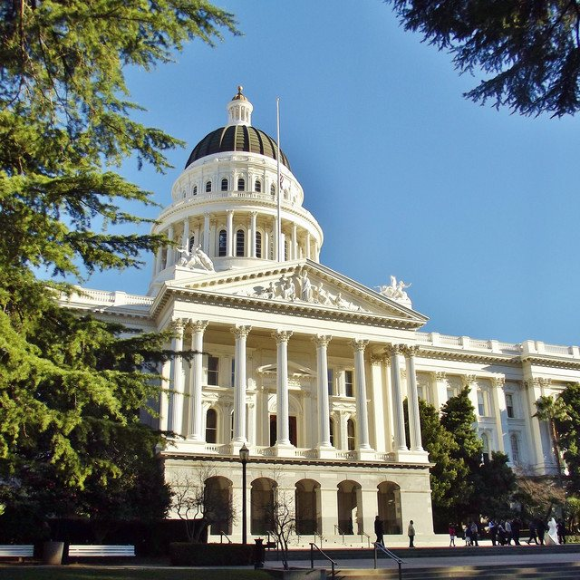
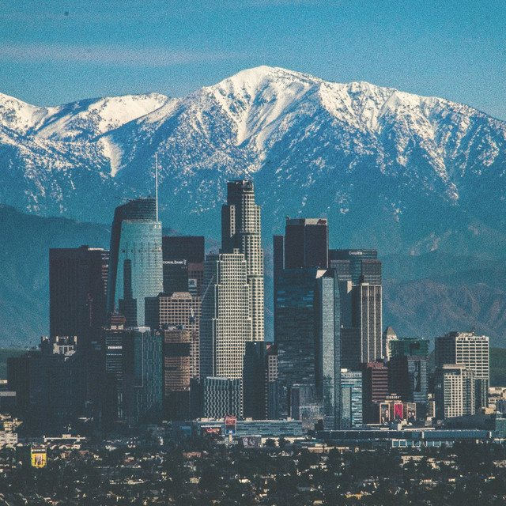
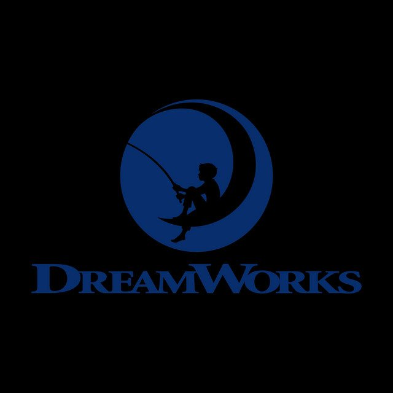

The Eclectic Polymath Podcast · Archive
#248 Los Angeles Votes: Bass, Raman, and the Ballot That Rewrites Two Governments

About this episode
Fourteen statewide propositions, two county charter amendments, seven city measures, and a mayoral runoff, all on one ballot, all decided on Tuesday. This episode is the complete voting prep for the November 3, 2026 California general election: every proposition and every Los Angeles measure on the ballot at 3045 South Crenshaw, in ballot order, with who wrote each one, who is paying for each side, and what a yes and a no actually change.
Key points
- This episode is the complete voting prep for the November 3, 2026 California general election
- every proposition and every Los Angeles measure on the ballot at 3045 South Crenshaw, in ballot order, with who wrote each one, who is paying for each side, and what a yes and a no actually change.
- county ethics and the Care First budget lock, the city's charter package, the fire department sales tax, and the Bass versus Raman mayoral race, including what each candidate has actually said, and where neither has taken a position at all.
- It closes with how and when to vote in Los Angeles County.
- Cover: California State Capitol, photo by Amadscientist, CC BY-SA 3.0, via Wikimedia Commons.
More like this

#246 Los Angeles: The Capital of the Pacific CenturyOctober 29, 20261:06:28#240 The Eras of Disney: From Snow White to Soul, and the Next Hundred YearsOctober 28, 202646:31
#242 DreamWorks: The Studio Built to Beat DisneyOctober 28, 202655:24#236 Harold Washington: The Mayor Who Beat the MachineOctober 25, 202649:52